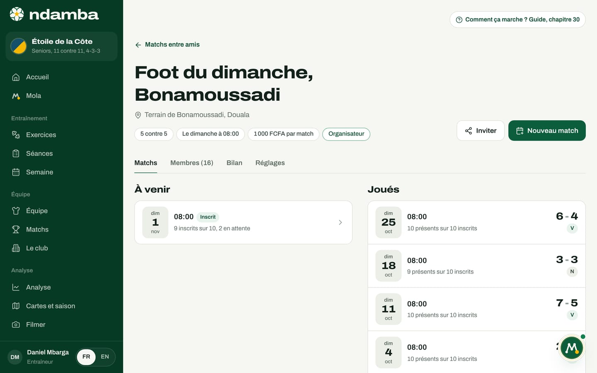
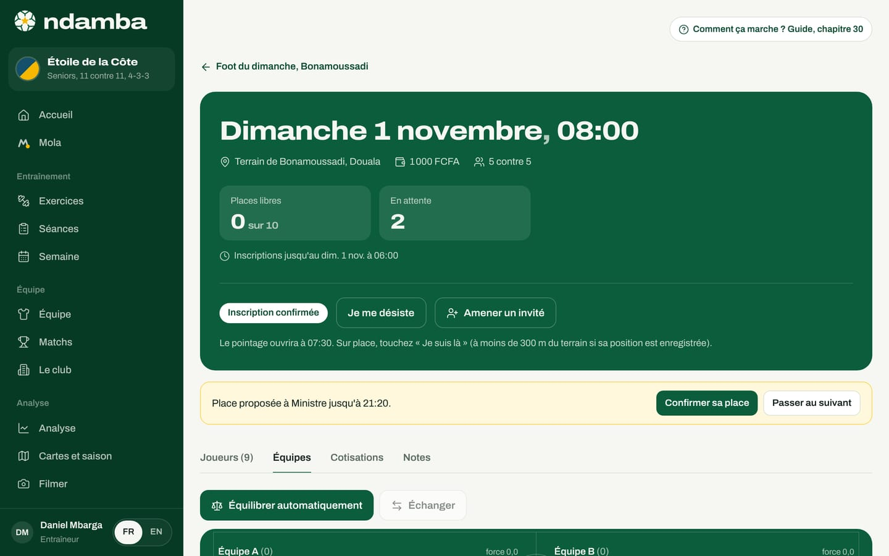
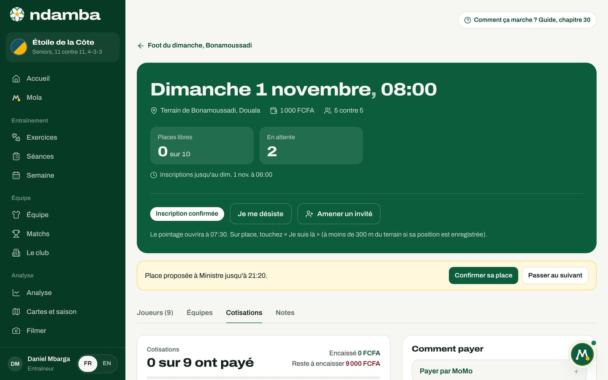
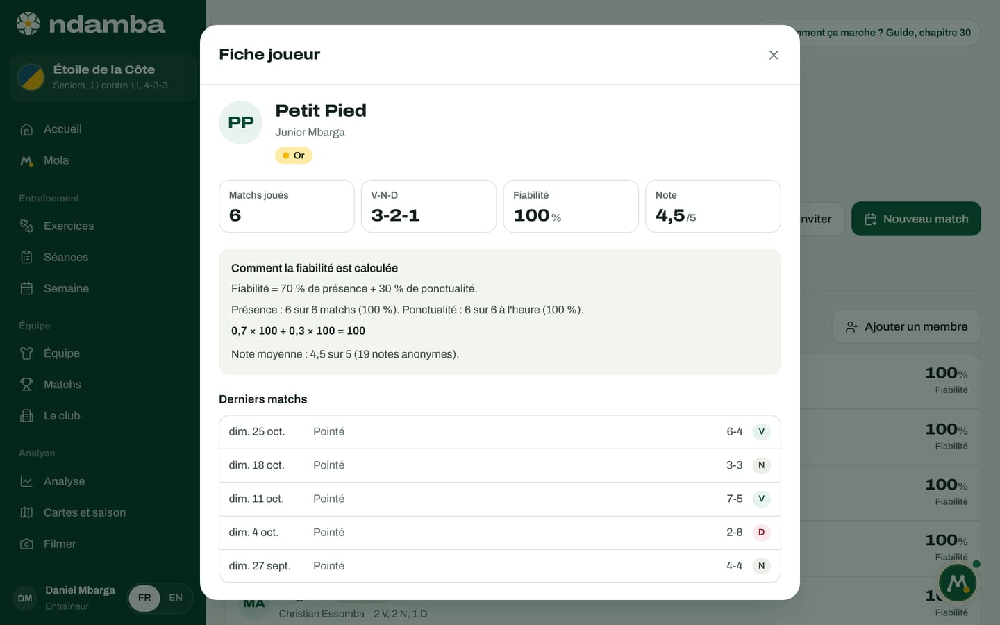
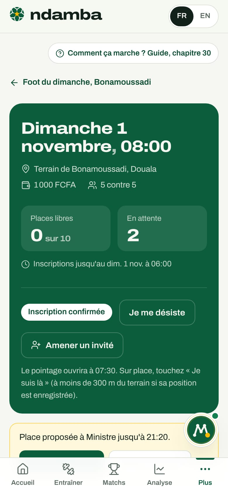

Les matchs entre amis
Le match du dimanche sans courir après personne : groupes et liens d’invitation, inscriptions avec date limite, plafond et liste d’attente, invités, niveau minimum, pointage au terrain, retards et absences, équipes équilibrées, score, cotisations par Mobile Money, notes entre coéquipiers, niveaux et fiabilité, bilan de saison, et l’offre organisateur. Avec les limites d’aujourd’hui.
13 min de lecture
Le football africain ne vit pas seulement dans les clubs. Il vit le dimanche matin sur le terrain du quartier, le jeudi soir sur un five en ville, entre collègues, anciens joueurs et voisins. Ces matchs ont tous le même organisateur fatigué : celui qui relance le groupe WhatsApp, compte les « je viens », court après ceux qui ne viennent pas, fait les équipes sur place et réclame la cotisation du terrain. Matchs entre amis est l’outil de cet organisateur. Il ne remplace pas le groupe WhatsApp : il lui donne une liste fiable, des règles claires et des comptes justes.
Pour Ndamba, c’est aussi une porte d’entrée. Un joueur du dimanche n’a pas besoin d’un rapport de match ; il a besoin de savoir s’il joue. Les joueurs n’y paient jamais rien.
Ouvrir les matchs entre amis
Dans le menu, groupe Jouer, touchez Matchs entre amis (adresse /app/pickup). Sur téléphone, il est dans le panneau Plus. Le sous-titre dit tout : « Votre match du dimanche sans courir après personne : inscriptions avec liste d’attente, pointage au terrain, équipes équilibrées, cotisations et fiabilité de chacun. »

La page a quatre blocs :
- Mes prochains matchs : les matchs où vous êtes inscrit, avec le jour, le coup d’envoi, le terrain, la cotisation, votre statut et le compte (« 9 inscrits sur 10, 2 en attente »).
- Mes groupes : chaque groupe avec votre rôle (Organisateur, Co-organisateur ou Joueur), le format, le jour, le nombre de membres et le prochain match (« places libres : 0 »).
- Rejoindre avec un code : « L’organisateur vous a donné un code de six caractères ? Saisissez-le ici. »
- Offre organisateur, et l’encadré Où vivent vos groupes.
Dans la démo, vous êtes « Le Coach » : organisateur de Foot du dimanche, Bonamoussadi (5 contre 5, le dimanche à 08:00, 1 000 FCFA par match, 16 membres) et simple joueur du Five du jeudi, Bastos, à Yaoundé. Sans groupe, la page propose Créer un groupe et Charger un exemple.
Créer un groupe et inviter
Créer un groupe ouvre un formulaire :
- Nom du groupe : « Le nom que tout le monde reconnaît, par exemple le jour et le quartier. »
- Terrain et Ville.
- Position du terrain, facultative : sur place, touchez Enregistrer ma position actuelle. Le pointage par position acceptera alors les joueurs à moins de 300 m.
- Joueurs par équipe (5 contre 5, 7 contre 7…), Jour habituel et Heure.
- Cotisation par match (0 pour un match gratuit) et Devise (FCFA, USD ou EUR).
- Niveau minimum : Aucun, Bronze, Argent ou Or. « En dessous de ce niveau, l’inscription devient une demande que vous validez. »
- Invités autorisés (+1) et Notes entre coéquipiers.
- Où envoyer la cotisation : Numéro MTN MoMo, Numéro Orange Money, Espèces acceptées sur place. Les joueurs verront ces numéros et un code de match à mettre dans le motif du transfert.
- Créer le groupe.
Ces réglages restent modifiables dans l’onglet Réglages du groupe.
Inviter. Le bouton Inviter du groupe ouvre Inviter des joueurs : un lien de la forme /rejoindre/ suivi du code du groupe (BNM7K2 dans la démo), Copier le lien et Partager sur WhatsApp, avec un message prêt : « Salut ! Rejoins « Foot du dimanche, Bonamoussadi » sur Ndamba… Inscris-toi ici. » La fenêtre le précise : « Vous envoyez le message vous-même. Pour l’instant, le lien ouvre le groupe sur cet appareil ; les invitations entre téléphones arriveront avec les comptes. »
La page /rejoindre/ montre l’invitation : le nom du groupe, le terrain, le format et le nombre de joueurs, le jour, la cotisation, le prochain match avec ses inscrits, et Ouvrir le groupe ou Rejoindre le groupe. « Jouer est toujours gratuit. » Sur un téléphone où le groupe n’existe pas, elle affiche Une invitation vous attend, le code, et conseille de répondre à l’organisateur sur WhatsApp : il vous inscrit sur sa liste. C’est la limite d’aujourd’hui, et c’est pour cela que l’organisateur peut tout faire à la place de ses joueurs.
Ajouter un membre (onglet Membres) crée un joueur à la main : Nom, Surnom (« Le nom qu’on crie sur le terrain. Par défaut, le prénom. ») et Téléphone, facultatif.
Le groupe


L’en-tête du groupe rappelle le terrain, le format, le jour et la cotisation. Quatre onglets suivent :
- Matchs : À venir, puis Joués, chacun avec sa présence (« 10 présents sur 10 inscrits »), son score et votre résultat (V, N, D).
- Membres : chaque joueur avec son surnom, son niveau, son rôle, ses victoires, nuls et défaites, et sa Fiabilité. « Touchez un joueur pour voir sa fiche. »
- Bilan : la saison du groupe (plus bas).
- Réglages : le formulaire du groupe, le lien d’invitation, les organisateurs, et Supprimer le groupe (ou Quitter le groupe pour un joueur).
Nouveau match demande la Date, le Coup d’envoi, les Places (« Par défaut, deux équipes de 5. »), la Cotisation, la Fin des inscriptions (« Après cette heure, les joueurs ne peuvent plus s’inscrire eux-mêmes. Vous pouvez toujours ajouter quelqu’un. ») et une Note pour les joueurs (« Chasubles fournies, apportez de l’eau »).
Les inscriptions et leurs règles

La page d’un match montre en grand les Places libres (« 0 sur 10 ») et En attente (2), puis la date limite (« Inscriptions jusqu’au … à 06:00 ») et vos boutons. Les règles sont celles d’un bon organisateur, appliquées sans exception :
| Situation | Ce qui se passe |
|---|---|
| Une place est libre | Je viens : « C’est noté : votre place est réservée. » |
| Le match est complet | M’inscrire sur la liste d’attente : vous passez en fin de liste |
| Une place se libère | Elle est proposée au premier de la liste pendant 15 minutes |
| Vous êtes en dessous du niveau minimum | Demander à jouer : l’organisateur Accepter ou Refuser |
| La date limite est passée | « Les inscriptions sont closes pour ce match. » ; seul l’organisateur peut encore ajouter quelqu’un |
| Vous êtes suspendu | L’inscription est bloquée (voir plus bas) |
Se désister. Je me désiste libère la place (« Désistement enregistré. Merci d’avoir prévenu. »). Un désistement n’est jamais puni : c’est l’absence sans prévenir qui l’est.
La liste d’attente et la place proposée. Quand une place se libère, le premier de la liste reçoit « Une place vous est proposée jusqu’à » une heure précise, avec Prendre la place et Laisser passer. Passé ce délai, l’organisateur voit « Le délai de … est passé » et choisit Confirmer sa place ou Passer au suivant. Dans la démo, une place est proposée à « Ministre », premier de la liste ; « Vieux Père » attend derrière lui. Aujourd’hui, aucune notification ne part : la personne doit ouvrir l’application, ou l’organisateur la prévenir sur WhatsApp.
Les invités. Si le groupe les accepte, Amener un invité ajoute un Prénom de l’invité. « Votre invité prend une vraie place, à votre nom (sa cotisation aussi). Si le match est complet, il passe en fin de liste d’attente. » Et la règle d’équité : « Un invité ne passe jamais devant. »
L’organisateur. Ajouter un joueur inscrit un membre qui a répondu par message : le plafond et la liste d’attente s’appliquent, la date limite non. Annuler ce match et Rouvrir ce match servent les jours de pluie.
Le pointage au terrain
Une inscription ne vaut rien si personne ne vérifie qui est venu. Le pointage ouvre 30 minutes avant le coup d’envoi et ferme 30 minutes après. Avant, la page l’annonce : « Le pointage ouvrira à 07:30. Sur place, touchez « Je suis là » (à moins de 300 m du terrain si sa position est enregistrée). »
- Sur place, pendant la fenêtre, touchez Je suis là.
- Si le groupe a enregistré la position du terrain, le téléphone demande votre position et calcule la distance. À moins de 300 m, le pointage est confirmé avec la distance ; au-delà, « Rapprochez-vous, ou demandez à l’organisateur de vous pointer. »
- Sans position du terrain, ou si la localisation est refusée, l’organisateur pointe à votre place avec Pointer : sa ligne le rappelle, « Touchez « Pointer » pour quelqu’un qui n’a pas pu le faire. »
Le retard. Pointer plus de 15 minutes après le coup d’envoi compte comme un retard, pas comme une absence. L’organisateur peut corriger avec Marquer en retard ou Pas en retard sur la fiche du joueur.
L’absence sans prévenir. À la fermeture du pointage, chaque inscrit qui n’a pas pointé reçoit le statut Absent sans prévenir et un signalement daté du match. La page le dit à l’organisateur : « Le pointage est fermé. Entrez le score dans l’onglet Équipes ; les absents non prévenus ont reçu un signalement. » Un invité n’est jamais signalé.
La suspension. Trois signalements en 30 jours bloquent les inscriptions dans le groupe, pendant 30 jours après le dernier : « Vos inscriptions sont bloquées : 3 absences non prévenues en 30 jours. L’organisateur peut lever la suspension. » Sur la fiche du joueur, l’organisateur peut Retirer le signalement d’une date, Effacer les signalements ou Lever la suspension. Une erreur se corrige aussi avec Marquer présent ou Excuser l’absence : le signalement disparaît avec elle.
La position sert à une seule chose : calculer, sur le téléphone, la distance entre vous et le terrain au moment du pointage. Ndamba ne la garde pas en continu et ne l’envoie nulle part (chapitre 25).
Les équipes, puis le score


L’onglet Équipes montre Équipe A, Équipe B et Sans équipe, chaque joueur avec sa force. Équilibrer automatiquement répartit les inscrits : le plus fort d’abord, chacun dans l’équipe dont le total est le plus bas, en gardant des effectifs égaux à un joueur près. La force d’un joueur, c’est sa note moyenne (3 tant qu’elle ne compte pas), plus un petit bonus de niveau (0,3 pour l’or, 0,15 pour l’argent, 0,05 pour le bronze). Chaque équipe affiche sa force totale.
Ensuite, à la main : « Glissez un joueur d’une équipe à l’autre, ou touchez un joueur de chaque équipe puis « Échanger ». » L’organisateur garde le dernier mot ; l’outil évite seulement le quart d’heure de discussion sur le bord du terrain.
Le score. Il se saisit à partir du coup d’envoi, dans Score du match, avec Valider le score (et Modifier le score ensuite). Sans équipes enregistrées, il ne compte pas dans les victoires, nuls et défaites. Un absent ne partage pas le résultat de l’équipe où il avait été placé.
Les cotisations


L’onglet Cotisations donne le compte (« 0 sur 9 ont payé », Encaissé, Reste à encaisser) puis une ligne par joueur. L’organisateur coche le moyen quand l’argent arrive : MoMo, Orange Money, Espèces ou Offert (une place offerte ne compte ni comme payée ni comme due). Tant que rien n’est coché, la ligne dit À payer.
Côté joueur, Comment payer donne trois étapes : « Envoyez 1 000 FCFA à …, l’organisateur, sur ce numéro », « Dans le motif du transfert, écrivez ce code de match », « L’organisateur coche votre paiement quand il le reçoit. », avec Copier le numéro et Copier le code. Le code de match permet à l’organisateur de savoir ce que paie chaque transfert. « Seuls les organisateurs voient qui a payé. »
La phrase qui compte est écrite sous les boutons : « Ndamba ne touche pas à l’argent : le transfert se fait dans votre application Mobile Money. Les paiements dans l’application arriveront avec les comptes. »
Les notes, les niveaux et la fiabilité
Les notes entre coéquipiers. Si le groupe les a activées, l’onglet Notes s’ouvre quand l’organisateur a validé le score. Seuls les joueurs qui ont pointé notent leurs coéquipiers du match, de 1 à 5 (Difficile, Moyen, Correct, Bon, Excellent). « C’est anonyme : personne ne voit qui a donné quelle note. » Une moyenne ne compte qu’à partir de 3 notes reçues.
Les niveaux. Un match joué est un match où le joueur a pointé.
| Niveau | Condition |
|---|---|
| Nouveau | Moins de 2 matchs joués |
| Bronze | 2 matchs joués ou plus |
| Argent | 3 matchs joués ou plus, et une moyenne de 3,5 ou plus |
| Or | 5 matchs joués ou plus, et une moyenne de 4,2 ou plus |
Tant que la moyenne ne compte pas (moins de trois notes), le niveau s’arrête à bronze.
La fiabilité. C’est la question que tout organisateur se pose : si celui-là dit « je viens », vient-il ? La formule est affichée sur chaque fiche : « Fiabilité = 70 % de présence + 30 % de ponctualité. » La présence, c’est la part des matchs où le joueur était inscrit et a pointé ; la ponctualité, la part de ses pointages faits à l’heure, c’est-à-dire moins de 15 minutes après le coup d’envoi. Deux exemples de la démo :
- « Vieux Père » : inscrit 4 fois, présent 4 fois, en retard une fois. Présence 100 %, ponctualité 75 % : 0,7 × 100 + 0,3 × 75 = 92,5, affiché 93 %.
- « Sorcier » : inscrit 3 fois, présent 2 fois, jamais en retard. Présence 67 %, ponctualité 100 % : 0,7 × 66,7 + 0,3 × 100 = 76,7, affiché 77 %, avec « 1 signalement ».


La fiche joueur. Touchez un joueur, dans un match ou dans Membres : Fiche joueur avec son surnom, son nom, son niveau, Matchs joués, V-N-D, Fiabilité et Note, puis Comment la fiabilité est calculée avec ses propres chiffres (« Présence : 6 sur 6 matchs (100 %). Ponctualité : 6 sur 6 à l’heure (100 %). » pour Petit Pied), sa note moyenne (« 4,5 sur 5 (19 notes anonymes) ») et ce qu’il lui manque pour le niveau suivant. Pour un match en cours, l’organisateur y trouve Pointer, Marquer présent, Excuser l’absence, Marquer en retard, Annuler le pointage et Retirer du match ; plus bas, Derniers matchs, puis Gérer ce membre : Modifier, Nommer co-organisateur (trois au maximum, avec l’offre organisateur) et Retirer du groupe.
Le bilan de saison
L’onglet Bilan du groupe résume une période : 30 jours, 90 jours ou Tout. Six chiffres en tête, puis un tableau par joueur (Inscrit, Présent, Absences, Retards, Présence, Invités, Payé, Doit). Dans la démo, sur six matchs : 98 % de présence, une absence non prévenue, deux retards, un invité, 57 000 FCFA encaissés et 3 000 FCFA encore dus. « Les cotisations des invités comptent pour le joueur qui les a amenés. »
Exporter en CSV télécharge le tableau pour un tableur : de quoi rendre des comptes au groupe à la fin de la saison, ou payer la location du terrain sans dispute.
L’offre organisateur
La règle est simple : les joueurs jouent toujours gratuitement. Les outils de l’organisateur sont payants, avec un essai gratuit de 30 jours : 3,99 $US par mois ou 34,99 $US par an (environ 2 400 FCFA par mois). Ces prix sont des propositions, à confirmer avec les premiers groupes.
L’offre ouvre :
- le suivi des cotisations (MTN MoMo, Orange Money, espèces, qui a payé et qui doit) ;
- le bilan de saison par joueur et l’export CSV ;
- les équipes équilibrées automatiquement et le tableau à glisser-déposer ;
- jusqu’à trois co-organisateurs ;
- plus de trois groupes organisés.
Le reste est gratuit pour tout le monde : les groupes, les inscriptions, la liste d’attente, le pointage, le score, les notes, les niveaux et la fiabilité. Sans l’offre, un outil payant affiche son nom et propose l’essai : « Essayez-le gratuitement pendant 30 jours, puis 3,99 $US par mois. Les joueurs, eux, jouent toujours gratuitement. »
Sur la page d’accueil des matchs entre amis, la carte Offre organisateur montre l’état (« Essai : 21 jours restants » dans la démo) et les boutons Commencer l’essai gratuit de 30 jours, Passer à la formule mensuelle, Passer à la formule annuelle, Arrêter l’essai. Et sa dernière ligne : « Les paiements ne sont pas encore branchés : l’essai et la formule sont une démonstration sur cet appareil, rien n’est facturé. »


Les limites d’aujourd’hui
L’encadré Où vivent vos groupes les écrit en clair : « Aujourd’hui, vos groupes vivent sur cet appareil. Les invitations partagées entre téléphones, les notifications et les vrais paiements Mobile Money demandent des comptes : ils sont prévus dans la feuille de route. En attendant, l’organisateur tient la liste pour tout le groupe et partage le lien sur WhatsApp. »
Concrètement :
- Un groupe vit sur le téléphone qui l’a créé. Les joueurs ne s’inscrivent eux-mêmes que sur cet appareil ; ailleurs, ils répondent sur WhatsApp et l’organisateur les inscrit.
- Aucune notification ne part. Ni rappel avant le match, ni alerte de place proposée.
- Aucun paiement réel. Les numéros Mobile Money sont affichés pour un transfert fait hors de Ndamba, et l’offre organisateur est une démonstration.